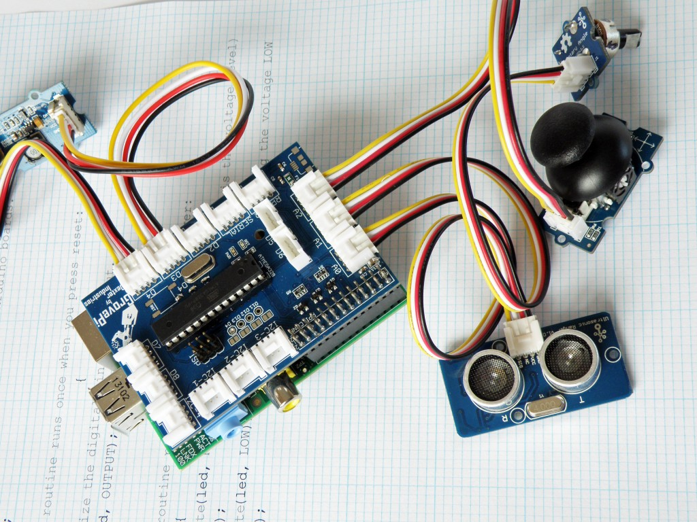

Check out GrovePi
These kits make working with the Raspberry Pi GPIO pins so simple and clean. I just ordered one of these kits and I will try to write up a review after I work it over.
If you are interested in building a quick and easy raspberry pi for experimenting with the “Internet of Things” (aka IoT) platform - this board and kit looks like it will get you there in minutes. Approx: $89 - includes board, and lots of sensors/accessories with wires and connectors.

This company is doing cool things to make raspberry pi projects fun and easy - especially for students.
Just had to share - here is their link: Dexter Industries
Enjoy
-g-